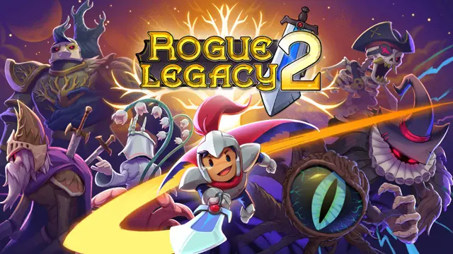

RL2.ModLoader is a custom mod loader
for Rogue Legacy 2 - a roguelite
created by Cellar Door Games. The project provides a way to
load specially prepared modifications into the game.
In May of 2023, I started creating modifications for Rogue Legacy 2
and sharing them in the Cellar Door Games Discord server. The main modding method at the time was
directly modifying the games assembly or assets. This meant that a player was unable to use more than one mod
altering the same files. This project was created to lift this restriction.